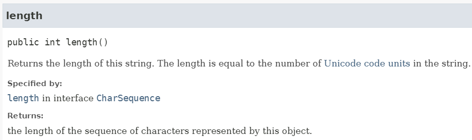

IPOO - Cap. 5 Comportamento Mais Sofisticado
Aula 5.1 - Teórica
DAC - ICET - Universidade Federal de Lavras
26/09/2026
Os tópicos abaixo te lembram alguma coisa? :)
- Praticar enquanto estuda.
- Ler o capítulo do livro.
- Anotar conceitos e dúvidas.

Principais Conceitos do Capítulo
- Encapsulamento
- Atributos e métodos estáticos
- Constantes
- Uso de classes de biblioteca
- Documentação de classes
Construções Java do capítulo
String,Random,static,final, autoboxing, classes empacotadoras.
O conceito de encapsulamento é fundamental na Programação Orientada a Objetos.
- E será apresentado no final do capítulo.
- Não deixe de estudar esse conteúdo!!!
No capítulo anterior conhecemos a classe ArrayList da biblioteca de classes do Java.
- Com ela, ficou mais fácil fazer programas para guardar uma quantidade qualquer de objetos.
- O que sem ela seria bem mais complicado.
Mas ela é apenas um exemplo de classe da biblioteca.
- Existem muitas que serão muito úteis em nossos softwares.
- E outras que, possivelmente, nunca usaremos.
Um bom programador Java precisa conseguir trabalhar com as classes da biblioteca.
- E saber quando utilizar cada uma.
- De forma a tornar a implementação de um programa mais fácil.
Muitas classes da biblioteca têm certas características comuns entre si.
- Especialmente as coleções, são classes que compartilham muitos atributos.
- E, usando a abstração, podemos tratar de classes de coleções de uma maneira mais geral.
Neste capítulo, vamos trabalhar com um sistema de Suporte Técnico.
- Começaremos com uma versão rudimentar.
- E ele será melhorado, incrementalmente, utilizando diferentes classes da biblioteca Java.
Documentação das classes de biblioteca
A biblioteca de classes do Java tem centenas de classes, com muitas opções de métodos.
- Será que um bom programador precisa conhecer todas elas de cor?
Na verdade, um bom programador deveria:
- Conhecer pelo nome as classes mais importantes e seus métodos (
ArrayListé uma delas). - Saber como encontrar informações das demais classes (tais como métodos e parâmetros).
O livro da disciplina recomenda que um programador conheça a documentação do Java para essas classes.
- A documentação é formada por páginas HTML bem detalhadas sobre todas as classes da biblioteca.
- Mas para quem não é fluente em inglês, isso pode gerar uma barreira inicial.
- Portanto, uma sugestão é usar também outras fontes para saber como usar as classes,
- como buscas no Google ou ferramentas de IA, como ChatGPT ou Gemini.
De toda forma, à medida que você fique mais experiente, saber usar a documentação pode ser muito útil.
- Essa é uma das coisas que separam o programador juninho do bom programador.
Um ponto importante sobre o uso da classe ArrayList é que nós já a utilizamos sem nunca termos visto o código da classe.
- Nós não conferimos como ela foi implementada.
- E isso não foi necessário para utilizarmos suas funcionalidades.
Tudo o que precisamos saber é:
- O nome da classe.
- As assinaturas dos seus métodos (nomes, parâmetros e tipos de retorno).
- E o que exatamente esses métodos fazem.
A mesma coisa acontece em projetos de software grandes de uma empresa.
- Geralmente, várias pessoas trabalham em diferentes partes do sistema.
- Cada programador deveria se concentrar em sua parte, sem ter que entender detalhes das outras partes.
- Como discutimos ao falar sobre abstração e modularização.
Cada programador deveria conseguir usar as classes das outras equipes como se elas fossem classes de biblioteca.
- Sabendo o que elas fazem, mas sem precisar saber como elas funcionam internamente.
Mas, para isso funcionar, cada membro de equipe deveria documentar sua classe assim como é feito para as classes da biblioteca
- Permitindo que outros programadores usem a classe sem precisar ler o código.
- Veremos como fazer isso mais adiante neste capítulo.
O sistema de suporte técnico
A ideia do sistema de Suporte Técnico é que ele seja um chat de atendimento aos clientes.
- de uma empresa fictícia, chamada DesonestosSistemas.
Antigamente a empresa tinha funcionários que faziam atendimento por telefone.
- Mas ela passou por problemas financeiros e demitiu a equipe.
- E não tem dinheiro para criar um chatbot de verdade.
- E agora ela quer criar um sistema de suporte para dar a impressão que ela atende os clientes.
- A ideia é que o sistema imite o atendimento que uma pessoa faria ao telefone.
Vamos começar com uma versão bem rudimentar do sistema, disponível no projeto suporte-tecnico1.
- A ideia é que, ao longo da aula, possamos melhorar o sistema.
- E, ao longo do processo, vamos aprender diversos conceitos.
Exercício 1
Experimente a versão rudimentar do sistema de suporte técnico.
Crie um objeto da classe SistemaDeSuporte e chame o método iniciar. Experimente conversar com o sistema pelo terminal e repare como é atendido.
Exercício 2
Para conhecermos melhor o projeto, crie um objeto da classe LeitorDeEntrada e experimente seu(s) método(s).
Faça o mesmo com um objeto da classe Respondedor.
Exercício 3
Agora leia o código da classe SistemaDeSuporte e tente entender como ela funciona.
Você deve ter notado que o sistema é realmente muito rudimentar.
- A classe
LeitorDeEntradabasicamente retorna uma string digitada pelo usuário no terminal. - A classe
Respondedortem um método que sempre retorna a mesma resposta. - Já a classe
SistemaDeSuportetem um objeto de cada uma das duas classes anteriores.- E um loop
whileque, repetidamente, obtém um texto do usuário e exibe uma resposta. - Isso é repetido até que o usuário digite qualquer string que comece com
tchau.
- E um loop
Lendo documentação de classes
Experimente usar o sistema de suporte técnico e digitar "Tchau" ou " tchau" (com espaço) para sair.
- O que acontece?
- Para o usuário isso é muito chato, certo?
- Mas nós podemos usar a documentação da classe String para melhorar isso.
A classe String é uma das classes da biblioteca padrão do Java.
- Nós podemos acessar a documentação da classe, no BlueJ, no menu
Ajuda→Biblioteca de classes de Java. - Será aberta a documentação online do Java no seu navegador web.
- Na parte superior direita há uma caixa de busca.
- Digite
stringe escolha primeira opção (java.lang.String).
Exercício 4
Abra a documentação de alguma outra classe do Java e compare a estrutura da documentação das duas classes. O que as páginas têm em comum?
Exercício 5
Procure pelo método startsWith na documentação da classe String. Veja que o método é sobrecarregado, há duas versões.
Escreva com suas palavras o que as duas versões fazem e a diferença entre eles.
Exercício 6
Há algum método na classe String que retorna quantos caracteres ela tem? Como o método se chama e quais são seus parâmetros?
Exercício 7
Procure se existe algum método na classe String que verifica se uma string termina com um dado sufixo. Se existir, como o método se chama, e quais são seus parâmetros e tipo de retorno?
Interface vs. Implementação
Você deve ter notado que a documentação tem diferentes tipos de informação:
- o nome da classe;
- uma descrição geral do objetivo da classe;
- uma lista dos construtores e métodos da classe;
- os parâmetros e tipos de retorno de cada construtor e cada método;
- e uma descrição do objetivo de cada construtor e método.
Todas essas informações formam o que chamamos de interface de uma classe.
Interface vs. Implementação
Todas essas informações formam o que chamamos de interface de uma classe.
- Repare que que a interface não mostra o código que implementa a classe.
- Se uma classe é bem descrita (ou seja, sua interface é bem escrita),
- um programador não precisa ver o código da classe para conseguir utilizá-la.
- A interface já tem toda a informação que ele precisa.
- (olha a abstração aí de novo!)
Interface vs. Implementação
O código que não vemos, que é o que faz a classe funcionar, é chamado de implementação da classe.
- Geralmente um programador trabalha na implementação de uma classe de cada vez,
- e, para isso, usa várias outras classes através de suas interfaces.
Essa diferenciação entre interface e implementação é um conceito muito importante.
- E vamos ver isso repetidamente nessa disciplina (e em disciplinas avançadas de POO).
Nota
A palavra interface tem diferentes significados em POO. Pode se referir a parte pública visível de uma classe (que é o que acabamos de aprender). Mas pode também se referir a interface gráfica de usuário ou a um tipo especial de classe que você conhecerá se puxar a disciplina Práticas de POO como eletiva. :)
Nós também podemos falar de interface de um método específico.
- Veja, por exemplo, a documentação do método
lengthda classeString.

A interface de um método consiste em sua assinatura e um comentário.
E a assinatura de um método contém:
- Um modificador de acesso (
public, nesse caso). - O tipo de retorno do método (
int, nesse caso). - O nome do método.
- Uma lista de parâmetros (vazia, nesse caso).
Repare que a interface do método tem tudo que precisamos saber para conseguirmos usá-lo.
Conceito
A interface de uma classe descreve o que a classe faz e como ela pode ser usada sem mostrar a implementação.
Conceito
O código-fonte completo que define uma classe é chamado de implementação da classe.
Usando métodos de classes da biblioteca
Em nosso sistema de suporte, já vimos que o sistema não aceita que o usuário digite "Tchau" ou " tchau".
- Vamos melhorar isso de forma que todas essas variações sejam reconhecidas como
"tchau".
Exercício 8
Encontre o método trim na documentação da classe String. Escreva com suas palavras o que ele faz, e como ele poderia ser chamado usando uma variável String chamada texto.
Um importante detalhe sobre objetos String em Java, é que eles são imutáveis.
- Isso significa que esses objetos não podem ser alterados depois de criados.
- Repare que o método
trim, por exemplo, retorna uma nova String.- Ele não modifica a String original.

É um erro comum em Java, tentar alterar uma String usando chamadas como:
texto.toUpperCase();
Essa chamada não provoca nenhum erro, mas também não causa nenhum efeito. Isso porque o método retorna uma nova String; ele não altera a original.
Portanto, se queremos alterar a variável
texto, precisamos descartar o objeto String original, atribuindo à variáveltextoa nova String gerada:texto = texto.toUpperCase();
Pelo que você leu sobre o método trim na documentação, como podemos usá-lo no sistema de suporte?
- Você deve ter visto que podemos usá-lo para remover espaços no início e no final da string.
O código da classe SistemaDeSuporte poderia ser então alterado da seguinte forma:
Qual a diferença entre escrever essas duas linhas de código:
ou escrever esse código?
O efeito é exatamente o mesmo.
- Você pode escolher a forma que acha mais fácil de entender.
- Veja que na segunda opção, a ordem de execução é como se existissem os parênteses como mostrado abaixo.
Conceito
Um objeto é chamado imutável se seu conteúdo ou estado não pode ser alterado depois que ele foi criado. Strings são exemplos de objetos imutáveis.
Exercício 9
Implemente a alteração na classe SistemaDeSuporte usando o método trim da classe String. Teste a alteração digitando espaço antes da palavra tchau.
Exercício 10
O exercício anterior ainda não resolveu o problema do usuário digitar "Tchau" com letra maiúscula.
Veja na documentação da classe String como funciona o método toLowerCase e o utilize de forma que o programa saia independente do usuário digitar tchau com letras maiúsculas ou minúsculas.
Exercício 11
Encontre o método equals na documentação da classe String. Utilize o método equals em vez do método startsWith na implementação da classe SuporteTecnico
Lembre-se que, como já foi dito em aulas práticas anteriores, não podemos comparar objetos String em Java utilizando o operador ==.
- Usando o operador estamos verificando se é o mesmo objeto, e não se os dois objetos têm o mesmo conteúdo.
- Para comparar se dois objetos String têm o mesmo conteúdo, devemos utilizar o método
equals.
Adicionando comportamento aleatório
No início da disciplina, nós utilizamos um objeto da classe Random no exercício da Nave para acrescentar aleatoriedade em nosso jogo.
- Nós podemos agora utilizar a mesma classe para mudar o comportamento do
Respondedordo nosso sistema de suporte. - A ideia é que o sistema exiba respostas aleatórias, em vez de sempre responder a mesma coisa.
Nós podemos fazer isso, alterando a classe Respondedor seguindo os passos abaixo:
- declarando um atributo do tipo
Randompara guardar um gerador de números aleatórios; - declarando um atributo do tipo
ArrayListpara guardar nossas possíveis respostas; - criando os objetos
RandomeArrayListno construtor da classeRespondedor; - preenchendo a lista com algumas frases de resposta;
- selecionando e retornando uma frase aleatória quando o método
gerarRespostaé chamado.
Exercício 12
Melhore a classe Respondedor de forma que ela gere respostas aleatórias como descrito no slide anterior.
Veja que, para gerar respostas aleatórias, basta sortearmos uma posição do ArrayList e usarmos essa posição para obter uma mensagem. Podemos sortear uma posição usando o método nextInt da classe Random, e o método size da classe ArrayList.
Dicas:
- Veja no próximo slide alguns exemplos de frase de resposta (mas não precisam ser exatamente essas, use sua criatividade!).
- Reveja o exercício da Nave para se lembrar como usar a classe
Random. - Leia a seção 5.4 do livro da disciplina.
Exemplos de frases de resposta do sistema de suporte técnico:
"Isso parece estranho. Você poderia descrever com mais detalhes?"
"Nenhum outro cliente reclamou disso antes. Qual é a configuração do seu sistema?"
"Poderia me dar mais informações sobre o problema?"
"Isso é abordado no manual. Você já leu o manual?"
"Sua descrição não é clara. Você tem um especialista com você que poderia descrever isso melhor?"
"Isso não é um bug, é uma funcionalidade!"
"Você poderia detalhar melhor isso?"
"Você já tentou executar o aplicativo no seu telefone?"
"Já verifiquei no Google e ChatGPT e nem eles sabem como responder :("Pacotes e import
No exercício anterior usamos as linhas de código abaixo:
Nós já usamos import antes, mas vamos agora entender um pouco mais sobre ele.
As classes da biblioteca de classes do Java não ficam disponíveis automaticamente, como as outras classes do projeto.
- Para usá-las precisamos informar isso para o compilador.
- Esse processo é chamado de importação de classe.
- E é feito usando a palavra-chave
import.
- E é feito usando a palavra-chave
Como a biblioteca de classes do Java possui milhares de classes,
- é necessário ter alguma forma de organização que facilite a utilização delas.
Java usa pacotes para organizar as classes em grupos.
- E os pacotes podem ser aninhados (ou seja, os pacotes podem conter outros pacotes).
As classes ArrayList e Random, por exemplo, fazem parte do pacote java.util.
- Nós podemos ver essa informação na documentação das classes.
O nome completo ou nome qualificado de uma classe é:
- o nome do seu pacote, seguido de um ponto, seguido do nome da classe.
- Assim, o nome completo da classe
ArrayList, por exemplo, é:java.util.ArrayList.
Java também nos permite importar pacotes completos com o comando:
Mas, apesar da linguagem permitir isso, é uma boa prática importar apenas as classes que você realmente vai usar.
- A vantagem é a legibilidade, pois fica claro quais classes são realmente necessárias.
Há uma exceção a essas regras de pacotes:
- Algumas classes são tão usadas que seriam importadas em quase todas as classes que implementamos.
- Essas classes pertecem ao pacote
java.lang.
Esse pacote é importado automaticamente pelo compilador em todas as classes.
- Portanto, não precisamos usar o comando
importpara esse pacote. - A classe
Stringé um exemplo de classe desse pacote.
Usando mapas para associações
Nosso sistema ficou mais dinâmico, mas ainda não é nada convincente,
- pois as respostas são independentes do que o usuário escreve.
Nós podemos melhorar um pouco isso, tentando responder algo pelo menos próximo do que o usuário perguntou.
- A ideia é identificar alguma palavra-chave na pergunta feita pelo usuário.
- e fornecer uma resposta que tenha algo a ver com essa palavra-chave.
Por exemplo, suponha que na pergunta do usuário apareça a palavra "lento".
- A resposta poderia ser então algo como:
Acredito que isso tem a ver com o seu hardware. Atualizar seu processador deve resolver todos os problemas de desempenho. Você tem algum problema com nosso software?
Já se na pergunta do usuário aparecer a palava "bug", a resposta poderia ser:
Bem, você sabe, todo software tem alguns bugs. Mas nossos engenheiros de software estão trabalhando muito para corrigi-los. Você pode descrever o problema com mais detalhes?
Mas como podemos implementar isso?
- Basicamente, nós precisamos associar uma resposta a uma palvra-chave.
Poderíamos tratar isso com uma sequência de if-else if.
- Mas, aproveitaremos a oportunidade para conhecer um novo tipo de coleção: mapas.
Um Mapa é uma coleção de pares de objetos chave-valor.
- Assim como um
ArrayList, um Mapa pode guardar uma quantidade flexível de entradas. - Mas uma diferença importante é que em um Mapa, uma entrada não é um objeto, e sim um par de objetos.
- Este par é formado por um objeto chave e um objeto valor.
Enquanto com ArrayList buscamos objetos pela sua posição,
- com um Mapa, usamos o objeto chave para buscar o objeto valor associado a ele.
Você consegue pensar em um exemplo de Mapa, ou seja, de coleção de dados organizados na forma de pares chave/valor?
- Um exemplo bem comum de um Mapa é a lista de contatos de um celular.
- A lista de contatos tem entradas, e cada entrada é um par: um nome e um número de telefone.
Usamos a lista de contatos procurando por um nome e, ao encontrá-lo, obtemos o número de telefone associado a ele.
- Nós não procuramos os contatos por um índice ou posição.
- Portanto, nós buscamos um valor (o número de telefone), a partir de uma chave (o nome).
Na lista de contatos de um celular poderíamos ter uma coleção como a seguinte:
| Nome | Número |
|---|---|
| Tião | (35) 9999 1111 |
| Maria | (35) 8888 1234 |
| Joaquim | (31) 9876 5432 |
Neste exemplo, a primeira entrada tem a chave "Tião" e o valor "(35) 9999 1111".
- Poderíamos buscar um número a partir da chave
"Maria".- E a resposta a esta busca seria
"(35) 8888 1234".
- E a resposta a esta busca seria
Você consegue pensar em outros exemplos de coleções na forma de Mapa que usamos no dia a dia?
Um dicionário:
- Buscamos um significado (valor) a partir de uma palavra (chave).
Siglas e nomes de estados:
- Podemos buscar o nome de um estado (valor) a partir de sua sigla (chave).
Uma coleção de alunos:
- Podemos buscar um objeto aluno (valor) a partir da sua matrícula (chave).
Conceito
Um mapa é uma coleção que guarda pares chave/valor como entradas. Valores podem ser buscados forncendo-se a chave correspondente.
A forma mais simples de usar essa estrutura é através da classe HashMap.
HashMapé uma implementação particular de Mapa.
Os métodos mais importantes da classe HashMap são: put e get.
- O método
putinsere uma entrada no mapa (um par de objetos chave/valor). - Já o método
getrecupera o valor associado a uma chave.
O trecho de código abaixo cria um HashMap e insere nele três entradas.
- Cada entrada é um par chave/valor consistindo de um nome e um número de telefone.
Quando declaramos uma variável do tipo HashMap, e quando criamos um objeto HashMap,
- precisamos informar os tipos dos objetos que serão guardados.
- Assim como fazemos com
ArrayList.
No caso do HashMap, precisamos informar dois tipos:
- o tipo dos objetos chave e o tipo dos objetos valor.
No caso da lista de contatos, por exemplo, definimos que tanto a chave quanto o valor são objetos do tipo String.
O trecho de código abaixo encontra e exibe o telefone da Maria.
Repare que passamos a chave (o nome "Maria") para o método get e ele nos retorna o valor (o número do telefone dela).
Exercício 13
Faça uma busca na internet sobre a documentação dos métodos get e put da classe HashMap e veja se a explicação bate com o que você está entendendo até o momento.
Exercício 14
Crie no BlueJ um projeto chamado contatos-hashmap.
Crie uma classe chamada Contatos e use um HashMap para implementar uma lista de contatos similar à que vimos anteriormente. Lembre-se que você deve importar java.util.HashMap.
Na classe, implemente dois métodos:
e
Esses novos métodos devem usar os métodos put e get da classe HashMap para implementar suas funcionalidades.
Exercício 15
Experimente com o BlueJ o que acontece quando você adiciona uma entrada em uma mapa com uma chave que já existia no mapa.
Exercício 16
Experimente com o BlueJ o que acontece quando você adiciona duas entradas em um mapa com o mesmo valor, mas com chaves diferentes.
Exercício 17
Experimente com o BlueJ o que acontece quando você tenta procurar um valor e a chave fornecida não existe no mapa.
Para os exercícios a seguir, você pode usar a documentação oficial da classe HashMap do Java.
- Ou pode usar uma ferramenta de IA para obter as respostas.
- De todo modo, quanto mais familiarizado estiver com a documentação oficial, melhor.
Exercício 18
Descubra como podemos saber quantas entradas estão guardadas em um HashMap.
Exercício 19
Como você pode verificar se uma chave existe em um mapa? Escreva um código Java de exemplo.
Exercício 20
Como podemos imprimir todas as chaves que estão armazenadas em um HashMap.
- Atenção, não vale aqui construções de programação funcional (que usam o operador
->, por exemplo).
Usando um mapa no sistema de suporte
Agora que conhecemos o conceito de Mapa, podemos fazer a melhoria que conversamos antes:
- dar uma resposta para o usuário que tenha alguma relação com sua dúvida.
Podemos fazer a implementação usando um HashMap.
- A ideia é ter um mapa que relacione palavras como
"lento"e"bug"com as respostas correspondentes a estas palavras. - Portanto, o mapa terá como chave uma
Stringe como valor também umaString.
Vamos começar, criando uma atributo na classe Respondedor, chamado mapaDeRespostas.
- E, no construtor, vamos criar o
HashMape chamar um novo métodopreencherMapaDeRespostas, para colocar no objeto todas as respostas que tivermos.
Vamos então implementar o método preencherMapaDeRespostas acrescentando todas as repostas que nosso sistema será capaz de fornecer.
private void preencherMapaDeRespostas() {
mapaDeRespostas.put("lento",
"Acredito que isso tem a ver com o seu hardware. " +
"Atualizar seu processador deve resolver todos os problemas de desempenho. " +
"Você tem algum problema com nosso software?");
mapaDeRespostas.put("bug",
"Bem, você sabe, todo software tem alguns bugs. " +
"Mas nossos engenheiros de software estão trabalhando muito para corrigi-los. " +
"Você pode descrever o problema com mais detalhes?");
// continue preenchendo as demais respostas possíveis
}- Repare que o método é privado, pois foi criado para ser acessado apenas dentro da própria classe
Respondedor.
Aqui está um exemplo de implementação mais completa.
private void preencherMapaDeRespostas() {
mapaDeRespostas.put("lento",
"Acredito que isso tem a ver com o seu hardware. Atualizar seu processador deve resolver todos os problemas de desempenho. Você tem algum problema com nosso software?");
mapaDeRespostas.put("bug",
"Bem, você sabe, todo software tem alguns bugs. Mas nossos engenheiros de software estão trabalhando muito para corrigi-los. Você pode descrever o problema com mais detalhes?");
mapaDeRespostas.put("travou",
"Bem, nunca trava em nosso sistema. Deve ter algo a ver com o seu sistema. Conte mais sobre sua configuração.");
mapaDeRespostas.put("travando",
"Bem, nunca trava em nosso sistema. Deve ter algo a ver com o seu sistema. Conte mais sobre sua configuração.");
mapaDeRespostas.put("lento",
"Acredito que isso tem a ver com o seu hardware. Atualizar seu processador deve resolver todos os problemas de desempenho. Você tem algum problema com nosso software?");
mapaDeRespostas.put("desempenho",
"O desempenho foi bastante adequado em todos os nossos testes. Você está executando outros processos em segundo plano?");
mapaDeRespostas.put("bug",
"Bem, você sabe, todo software tem alguns bugs. Mas nossos engenheiros de software estão trabalhando muito para corrigi-los. Você pode descrever o problema com mais detalhes?");
mapaDeRespostas.put("erro",
"Bem, você sabe, todo software tem alguns bugs. Mas nossos engenheiros de software estão trabalhando muito para corrigi-los. Você pode descrever o problema com mais detalhes?");
mapaDeRespostas.put("windows",
"Este é um bug conhecido relacionado ao sistema operacional Windows. Por favor, informe à Microsoft. Não há nada que possamos fazer a respeito.");
mapaDeRespostas.put("mac",
"Este é um bug conhecido relacionado ao sistema operacional Mac. Por favor, informe à Apple. Não há nada que possamos fazer a respeito.");
mapaDeRespostas.put("caro",
"O custo de nosso produto é bastante competitivo. Você deu uma olhada e realmente comparou nossos recursos?");
mapaDeRespostas.put("instalação",
"A instalação é realmente bastante simples. Temos muitos assistentes que fazem todo o trabalho para você. Você leu as instruções de instalação?");
mapaDeRespostas.put("memória",
"Se você ler atentamente os requisitos do sistema, verá que os requisitos de memória especificados são de 6 gigabytes. Você realmente deve atualizar sua memória. Mais alguma coisa que você gostaria de saber?");
mapaDeRespostas.put("linux",
"Levamos o suporte ao Linux muito a sério. Mas há alguns problemas. A maioria está relacionada a versões incompatíveis do glibc. Você pode ser um pouco mais preciso?");
mapaDeRespostas.put("bluej",
"Ah, o BlueJ, sim. Tentamos comprá-los há muito tempo, mas eles simplesmente não vendem... São pessoas teimosas. Não há nada que possamos fazer a respeito, desculpe.");
}Abaixo temos uma primeira tentativa de alteração do método gerarResposta para usar as respostas que criamos.
- Vamos começar simplificando as coisas:
- assumindo que o usuário digitará uma única palavra.
public String gerarResposta(String palavra)
{
String resposta = mapaDeRespostas.get(palavra);
if (resposta != null) {
return resposta;
}
else {
// Se chegamos aqui, é porque a palavra não foi reconhecida.
// Neste caso, pegamos uma de nossas respostas aleatórias
// que tínhamos criado antes.
return pegarRespostaPadrao();
}
}Exercício 21
Aplique as últimas alterações ao projeto de suporte técnico.
Você precisará alterar também a chamada ao método gerarResposta feita na classe SistemaDeSuporte.
O sistema está respodendo bem melhor agora,
- mas desde que o usuário digite apenas uma palavra, em vez de uma pergunta completa.
O ideal é deixarmos o usuário digitar uma pergunta inteira,
- e tentar reconhecer nela alguma das palavras tratadas.
Para isso, precisaremos alterar a classe LeitorDeEntrada para que ela retorne a entrada como um conjunto de palavras
- em vez de retornar uma única String.
- É o que veremos a seguir.
Usando conjuntos
A biblioteca de classes do Java possui diferentes tipos de conjuntos implementados em diferentes classes.
- Uma delas é chamada
HashSet.
Exercício 22
Busque na documentação do Java, ou usando uma ferramenta de IA, quais são as similaridades e as diferenças entre um HashSet e um ArrayList.
Para os curiosos: tente entender porque ArrayList é um caso especial de List e HashSet é um caso especial de Set.
A declaração de um HashSet,
- a criação do objeto
- e a adição de elementos é feita da mesma forma que um
ArrayList.
Para percorrer um HashSet podemos usar um for-each,
- igualzinho ao que usamos para
ArrayList.
Repare, portanto, que usar diferentes coleções em Java é sempre muito parecido.
- Se você entender como usar uma delas, você conseguirá usar as outras com facilidade.
As diferenças entre as coleções estão nos seus comportamentos.
- Uma lista, por exemplo, mantém a ordem dos elementos, permite acesso aos elementos por posição, e permite elementos repetidos.
- Já um conjunto não mantém a ordem dos elementos, e garante que não existem elementos repetidos.
- Portanto, os elementos podem ser percorridos no
for-eachem ordem diferente da que eles foram inseridos. - E inserir um mesmo elemento uma segunda vez, simplesmente não tem nenhum efeito.
- Portanto, os elementos podem ser percorridos no
Dividindo Strings
Agora que sabemos como usar um set,
- vamos verificar como podemos pegar a entrada do usuário,
- quebrá-la,
- e guardar as palavras em um conjunto de string.
Vamos fazer isso alterando o método obterEntrada da classe LeitorDeEntrada.
public HashSet<String> obterEntrada()
{
System.out.print("> "); // imprime o prompt
String linhaDeEntrada = leitor.nextLine().trim().toLowerCase();
// quebra nos espaços
String[] vetorDePalavras = linhaDeEntrada.split(" ");
// adiciona palavras de um vetor em um HashSet
HashSet<String> palavras = new HashSet<>();
for(String palavra : vetorDePalavras) {
palavras.add(palavra);
}
return palavras;
}- Estamos usando os métodos
trimetoLowerCaseque vimos anteriormente. - O método
splitusa o parâmetro passado para dividir uma string e um vetor de substrings.
Exercício 23
O método split é mais poderoso do que pode parecer pelo nosso exemplo. Como você pode definir exatamente como uma string deve ser quebrada? Dê alguns exemplos.
Exercício 24
Escreva como seria possível quebrar uma string armazenada em uma variável linha contendo palavras separadas por ponto-e-vírgula.
Exercício 25
Qual seria a diferença no resultado retornado pelo método obterEntrada, se o retorno fosse um ArrayList em vez de um HashSet?
Finalizando o Sistema de Suporte
Precisamos agora alterar as classes SistemaDeSuporte e Respondedor
- para que lidem com um conjunto de palavras em vez de uma única string.
Vamos começar alterando o método iniciar da classe SistemaDeSuporte.
public void iniciar()
{
boolean terminou = false;
imprimirBoasVindas();
while(!terminou) {
HashSet<String> entrada = leitor.obterEntrada();
if(entrada.contains("tchau")) {
terminou = true;
}
else {
String resposta = respondedor.gerarResposta(entrada);
System.out.println(resposta);
}
}
imprimirDespedida();
} public void iniciar()
{
boolean terminou = false;
imprimirBoasVindas();
while(!terminou) {
1 HashSet<String> entrada = leitor.obterEntrada();
2 if(entrada.contains("tchau")) {
terminou = true;
}
else {
String resposta = respondedor.gerarResposta(entrada);
System.out.println(resposta);
}
}
imprimirDespedida();
}- 1
-
alteramos o tipo da variável
entradapara que seja umHashSet(precisamos importar a classe). - 2
-
mudamos a verificação que finaliza o sistema, passando a usar o método
contains.
Por fim, vamos alterar o método gerarResposta da classe Respondedor
public String gerarResposta(HashSet<String> palavras)
{
for (String palavra : palavras) {
String resposta = mapaDeRespostas.get(palavra);
if (resposta != null) {
return resposta;
}
}
// Se chegamos aqui, é porque a palavra não foi reconhecida.
// Neste caso, pegamos uma de nossas respostas aleatórias
// que tínhamos criado antes.
return pegarRespostaPadrao();
}1 public String gerarResposta(HashSet<String> palavras)
{
2 for (String palavra : palavras) {
String resposta = mapaDeRespostas.get(palavra);
if (resposta != null) {
return resposta;
}
}
// Se chegamos aqui, é porque a palavra não foi reconhecida.
// Neste caso, pegamos uma de nossas respostas aleatórias
// que tínhamos criado antes.
return pegarRespostaPadrao();
}- 1
-
O método agora recebe um
HashSetem vez de umaString. - 2
-
Percorremos as palavras do
HashSete a primeira que for uma das palavras que tratamos, nós retornamos a resposta.
Para reforçar (em casa)
Exercício 26
Adicione pelo menos mais uma resposta ao sistema de suporte técnico.
Exercício 27
Garanta que uma resposta padrão nunca é retornada duas vezes seguidas.
Exercício 28
Altere o código para que, em vez de retornar a resposta para a primeira palavra identicada, o programa identifique todas as palavras presentes na pergunta do usuário e tente responder da forma mais apropriada.
Autoboxing e classes empacotadoras
Nós vimos que um ArrayList consegue guardar qualquer tipo de objeto.
- Mas como
intnão é um objeto, não é possível usar umArrayListpara guardar uma lista de números inteiros?
Isso é possível através das classes empacotadoras (wrapper classes).
- Cada tipo primitivo em Java tem uma classe empacotadora que representa o mesmo tipo,
- Mas que é um objeto de verdade.
- A classe empacotadora para
int, por exemplo, se chamaInteger.
Nós poderíamos criar explicitamente um objeto do tipo Integer:
E poderíamos então declarar um ArrayList<Integer> e guardar nele o objetoInt.
Mas, na verdade, nós nunca fazemos isso, pois podemos guardar valores de tipo primitivo no ArrayList!
- Isso porque sempre que um valor de tipo primitivo é usado em um contexto que requer um tipo empacotador (wrapper),
- o compilador converte o valor automaticamente em um objeto empacotador correspondente.
Essa funcionalidade se chama autoboxing
- (algo como, auto-empacotamento).
Portanto, na prática, podemos escrever código como mostrado abaixo:
Repare que estamos guardando o valor da variável nota, do tipo int, em um ArrayList<Integer>.
Seguindo a mesma ideia, o compilador realiza o unboxing quando obtemos um valor da coleção:
Veja portanto que, em termos práticos, a única coisa que precisamos lembrar é de declarar o ArrayList usando a classe empacotadora (como a Integer).
- Mas na hora de usar o
ArrayListpodemos tratar todos os dados como se fossem do tipoint.
Veja no Apêndice B do livro uma lista completa dos tipos primitivos e suas classes empacotadoras.
- Vale ressaltar também que o mesmo conceito é aplicado para as demais coleções, como a classe
HashMap.
Conceito
Autoboxing é realizado automaticamente quando um valor de tipo primitivo é usado em um contexto que requer um tipo empacotador (wrapper).
Fazendo contabilidade de uso de objetos
Combinando um mapa com autoboxing, conseguimos uma maneira simples de contabilizar o uso de objetos.
Suponha, por exemplo, que a empresa responsável pelo Sistema de Suporte queira contar quantas vezes cada palavra não tratada é utilizada.
- Dessa forma, ela poderia identificar palavras muito usadas.
- E aumentar o seu mapa de respostas para que o usuário seja “melhor” respondido.
Para isso, vamos criar uma classe ContadorDePalavras.
- A classe vai ter um
HashMapque associa da palavra a um contador inteiro. - E um método que recebe o
HashSetda entrada do usuário e atualiza a contagem das palavras.
Vamos usar o método getOrDefault da classe HashMap.
- Esse método é parecido com o
get, mas quando a chave não está presente noHashMap - em vez de retornar
null, ele retorna o valor padrão passado como segundo parâmetro do método.
public class ContadorDePalavras
{
private HashMap<String, Integer> contagem;
public ContadorDePalavras()
{
contagem = new HashMap<>();
}
public void contabilizarPalavras(HashSet<String> entrada)
{
for(String palavra : entrada) {
int contador = contagem.getOrDefault(palavra, 0);
contagem.put(palavra, contador+1);
}
}
}Repare que o trecho que usa o método getOrDefault,
Exercício 29
Altere o sistema de suporte para incluir a classe ContadorDePalavras.
A ideia é contabilizar as palavras das interações com o usuário que levaram a uma resposta padrão.
Exercício 30
Adicione um método à classe ContadorDePalavras para exibir no terminal a contagem de uso de cada palavra. Chame o método antes da mensagem de despedida ser exibida.
Exercício 31
Pesquise para que serve o método putIfAbasent da classe HashMap.